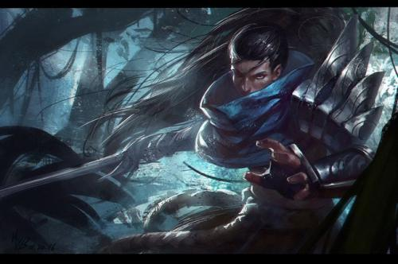

背景简介
在符文之地，魔法就是一切。 在这里，魔法不只是一种神秘莫测的能量概念。它是实体化的物质，可以被引导、成形、塑造和操作。符文之地的魔法拥有自己的自然法则。源生态魔法随机变化的结果改变了科学法则。 符文之地有数块大陆，不过所有的生命都集中在最大魔法大陆——瓦罗兰。瓦罗兰大陆居于符文之地中心，是符文之地面积最大的大陆。 被祝福的符文之地上有大量源生态魔法能量，而此地居民可以触及其中的能量。符文之地的中心区域集中了数量巨大的源生态魔法能量，这些地方都是水晶枢纽的理想位置。水晶枢纽可以将源生能量塑形为自身实体化的存在。此外，水晶枢纽还可以成为能量车间，为需要魔法能量的建筑供能。水晶枢纽遍布符文之地，但最大的水晶枢纽都坐落在瓦罗兰大陆。
-
英雄联盟的历史
他们认为恶毒自私如同疾病，应当从人类灵魂中根除。来到德玛西亚并定居于此的人们，具有和本地居民一样的理想和美德。损人利己的人很快会发现，在这里他们下场是放逐或者更糟。
-
战争学院
战争学院内部是马约里斯秘术中心，部分是魔法学校，部分是法术储藏地，还有一部分是雇佣经纪处。马约里斯秘术中心是召唤师们交易游戏金币的中心，无论新手还是大师都可以在这里花费自己从

诺克萨斯
就诺克萨斯居民的素质而言，基本都是这条准则的支持者。虽然看起来很残酷，不过并非就是混乱的标志。由于人之本性，诺克萨斯是一个有序的城邦，保护局面不受侵害，至少不受同类侵害。不过在诺克
-
德玛西亚
德玛西亚人民的共同目标是通过善良和正义让所有人都过得更好。他们认为恶毒自私如同疾病，应当从人类灵魂中根除。来到德玛西亚并定居于此的人们，具有和本地居民一样的理想和美德。损人利己的人很快会发现，在这里他们下场是放逐
-
班德尔城
班德尔城是符文之地最古老的城邦，它的历史比德玛西亚和诺克萨斯还早。班德尔城也是瓦洛兰最与世隔绝的城邦——约德尔人喜欢这样。虽然约德尔人非常友好互助，不过城市的天然自我保护性却阻碍了他们享受生活。班德尔城市斥候熟知
-
艾欧尼亚
艾欧尼亚长期以来一直申明对瓦罗兰的政治事务保持中立，不过这一姿态并不能让艾欧尼亚远离大陆的纷争。人类强权城邦诺克萨斯已经将征服目标转向了艾欧尼亚。在英雄联盟有能力全面影响瓦洛兰的政治事务之前，诺克萨斯已经发动了
- 
弗雷尔卓德
在皮尔特沃夫领导人的眼里，符文之战让整个星球的居民都滥用魔法，并将最终导致星球的崩溃。皮尔特沃夫的科研机构将此视为至关生死的重要事务，时刻保持关注。他们认为，祖安肆意滥用魔法，不顾过去的教训，用星球的未来换取
-
比尔吉沃特
蓝焰岛是一个错误的古称，实际上蓝焰岛是瓦洛兰大陆约德尔城东部海岸线外三个独立岛屿的总称。在第三次符文之战期间，最大的一场战争引发的毁灭性魔法力量将岛屿撕成碎片。一枚附有高度不稳定的魔法超大稀有金属炸弹落在了岛上
-
祖安
祖安自豪地宣称，这里拥有全瓦罗兰种类最多的化学研究中心。大量城邦——甚至包括竞争对手皮尔特沃夫——都与祖安有化学贸易往来。此外，祖安还是瓦罗兰的炼金术中心，只有寥寥几位炼金术士居住在祖安之外瓦罗然的居民